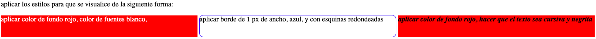

NOTA: considerar la propiedad display de css que vimos para armar las columnas y las filas.
aplicar color de fondo rojo, color de fuentes blanco,
aplicar borde de 1 px de ancho, azul, y con esquinas redondeadas
aplicar color de fondo rojo, hacer que el texto sea cursiva y negrita